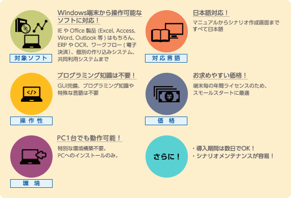

間接業務の現場で培った経験・実績に基づき、ツボを押さえたRPA導入をサポートします。
オフィスでの生産性向上に効果を発揮するPC業務の自動化ソリューションとして注目を浴びているRPA（Robotic Process Automation）。
現場の業務で有効に活用しつづけるためには、運用まで見据えて「やってはいけない」、「これだけはやっておくべき」導入のポイント（ツボ）があります。
NTTビジネスアソシエは、NTTグループのシェアードサービス会社として、経理・人事給与・福利厚生等の間接業務において、自らRPAを業務に取り入れ、試行錯誤してきた経験・実績に基づき、お客さまのRPA導入をサポートします。
効果が期待できる業務
WinActorの6つの特長
主な仕様
| 対応OS | Windows 7 SP1, Windows 8.1, Windows 10 |
|---|---|
| 対応ソフトウェア | Microsoft Office 2007, 2010, 2013, 2016 ※Office連携時 |
| 対応ブラウザ | Internet Explorer 8, 9, 10, 11 ※ひな形作成機能使用時 |
| 対応アプリ開発環境 | .net Framework 3.5, 4.0, 4.5 |
| 推奨CPU | Intel Pentium4 2.5GHz 相当以上 |
| ハードディスク | 空き容量 500MB以上 |
| メモリ | 2GB以上 |
| ディスプレイ | 1024×768以上 |
※「WinActor」は、日本国内におけるエヌ・ティ・ティ・アドバンステクノロジ株式会社の登録商標です。
※「Windows」、「Microsoft」、「Internet Explorer」、「.net Framework」、「Excel」、「Access」、「Word」、 「Outlook」は、米国Microsoft Corporationの米国およびその他の国における商標または登録商標です。
※「Intel」は、米国およびその他の国におけるIntel Corporationの 商標です。

サイドナビエリアはここからです。